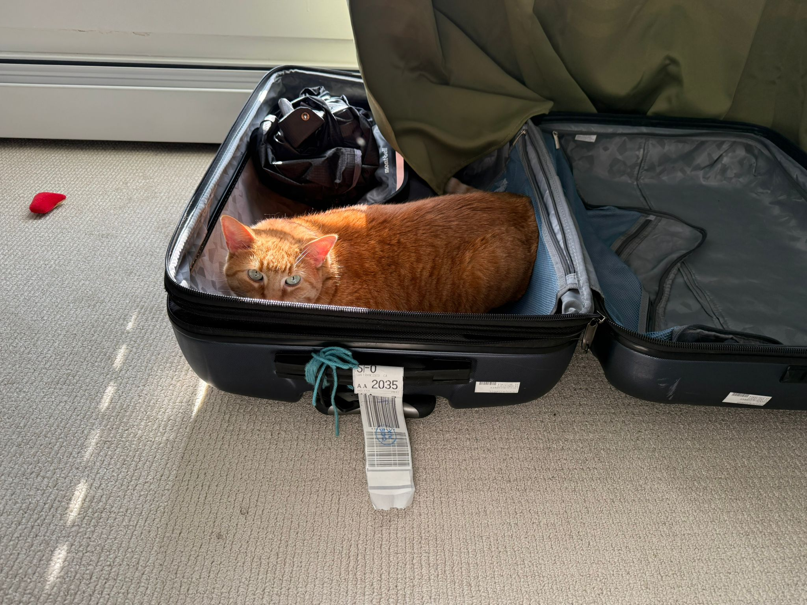
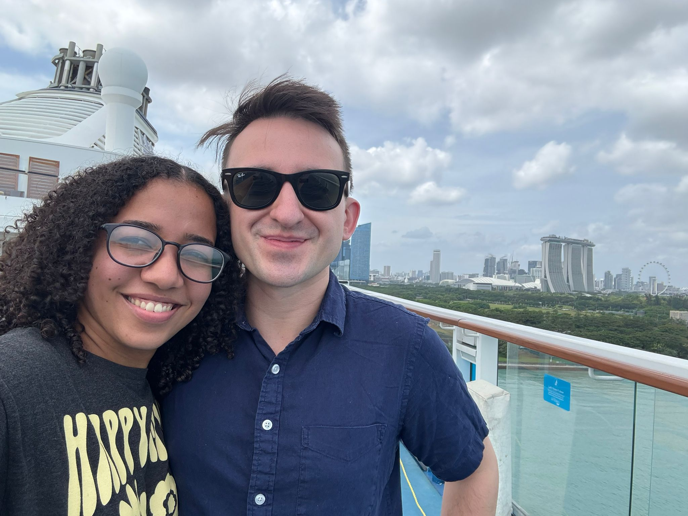
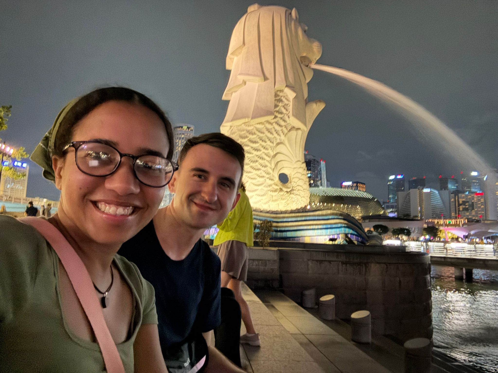

Our Trip to Singapore
2025-02-10
Alanis and I recently took a two week trip to Singapore. We stayed in Singapore for two nights, and then we went on a cruise for five nights, and then we stayed another two nights in Singapore.The 17-hour flight was longer than we'd ever experienced, but personally I enjoyed it, as I like being lazy and watching movies and reading.
Our first full day in Singapore, we were taken off guard because it was Chinese New Year, which we had forgotten about, and it's a huge deal in Singapore. There were a lot of crowds, and celebrations, and it was pretty overwhelming. We enjoyed the following day more as we'd learned what to expect by then.The cruise was fantastic, we had stops in Georgetown, Penang, Malaysia and Phuket, Thailand. In Malaysia, we took a tour of some of the historic spots of the area, including a Peranakan museum, and a clan jetty. In Thailand, we did snorkeling and rode canoes through caves. The Thailand stop was more of a beach/resort place, whereas the stop in Malaysia felt like more culture. Both were very good.
On the cruise, we were really impressed with the food and the entertainment. Unfortunately, Alanis caught some sort of cold or flu around the fourth night, and I got food poisoning the same day, so we did not get to fully enjoy the day of cruising only with no stops.When we were back from the cruise and had a couple more days in Singapore, we were basically professional Singaporers at that point, and made the most of our time. Singapore has a lot of cool nonsense. Some highlights that come to mind were the zoo, the Gardens by the Bay, and their giant goofy ferris wheel.
Alanis thoughts: "I had a lot of fun... And it was very nice... I like Thailand best... I think... I would like to go on a dedicated trip to Thailand... My favorite part was how cheeeaaap it was... That's very nice. And I think cheap countries are more fun than expensive countries personally... 'Cuz then you can buy whatever you WANT!!!"